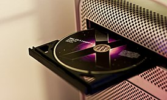
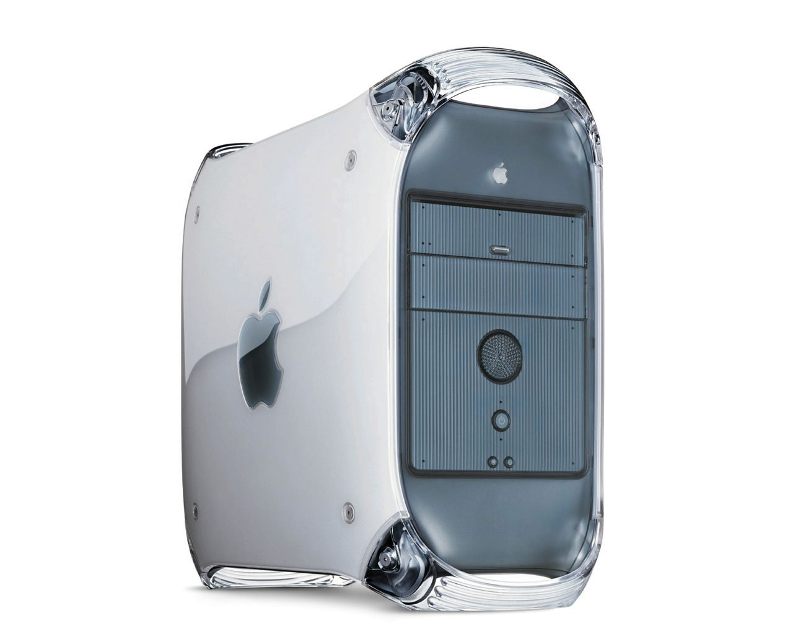
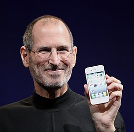

macOS (изначально была представлена как Mac OS X, в 2012 переименована в OS X, в 2016 переименована в macOS) — проприетарная операционная система от компании Apple. Является преемницей Mac OS 9.

macOS
Семейство операционных систем macOS является вторым по распространённости для десктопа (после Windows). Рыночная доля macOS (учитываются все версии) по состоянию на январь 2021 составляет около ▼16,96 % по оценкам StatCounter. Самой популярной версией macOS является Catalina (69,56 % среди всех версий macOS), следом идут Mojave (11,18 %), High Sierra (9,11 %), Sierra (3,6 %), El Capitan (3 %), Yosemite (2,34 %).
В macOS используется ядро XNU, основанное на микроядре Mach и содержащее программный код, разработанный компанией Apple, а также код из ОС NeXTSTEP и FreeBSD. До версии 10.3 ОС работала только на компьютерах с процессорами PowerPC. Выпуски 10.4 и 10.5 поддерживали как PowerPC-, так и Intel-процессоры. Начиная с 10.6, macOS работает только с процессорами Intel и Apple Silicon.
В последние годы отмечается взаимная интеграция macOS и iOS — операционной системы для мобильных устройств Apple (iPhone, iPad и iPod touch). Сама компания рассматривает две ОС как единую платформу. На презентации Back to the Mac в 2010 году Стив Джобс, анонсируя OS X Lion, упомянул о важности обмена наработками между Mac OS X и iOS: так, в Lion появилась поддержка мультитач-жестов на трекпаде (аналогичных жестам на iPad). В последующих выпусках macOS также наблюдалась тенденция к заимствованию функций из iOS (и наоборот). Например, в OS X Yosemite и iOS 8 была добавлена технология Handoff, позволяющая «перехватывать» с одного устройства приложения, запущенные на другом: начать набирать письмо на Mac, а закончить на iPad; открыть веб-страницу на iPhone и продолжить чтение на Mac и т. д.
На WWDC 2016 было объявлено, что OS X будет переименована в macOS, чтобы соответствовать общей стилистике именования других платформ Apple: tvOS, watchOS и iOS; macOS Sierra стала первой версией, использующей новое название.
Описание
macOS значительно отличается от предыдущих, «классических версий» Mac OS. Основа системы — POSIX-совместимая операционная система Darwin, являющаяся свободным программным обеспечением. Её ядром является XNU, в котором используется микроядро Mach и стандартные службы BSD. Все возможности Unix в macOS доступны через консоль.

Поверх этой основы в Apple разработано много проприетарных компонентов, таких как Cocoa и Carbon, Quartz.
macOS отличается высокой устойчивостью, что делает её непохожей на предшественницу, Mac OS 9.
В macOS (как и в любой UNIX-системе) используется вытесняющая многозадачность и защита памяти, позволяющие запускать несколько изолированных друг от друга процессов, каждый из которых не может прервать или модифицировать все остальные. На архитектуру macOS повлияла OpenStep, которая была задумана как переносимая операционная система (например, NeXTSTEP была перенесена с оригинальной платформы 68k компьютера NeXT до приобретения NeXTSTEP компанией Apple). Аналогичным образом OpenStep была перенесена на PowerPC в рамках проекта Rhapsody.
Наиболее заметно изменился графический интерфейс, который в macOS получил название Aqua. Использование закруглённых углов, полупрозрачных элементов и светлых полосок также повлияло на внешний вид первых моделей iMac. После выхода первой версии Mac OS X другие разработчики тоже стали использовать интерфейс Aqua. Для предотвращения использования своего дизайна на других платформах Apple воспользовалась услугами юристов.
Основами macOS являются:
- Подсистема с открытым кодом — Darwin (ядро Mach и набор утилит BSD).
- Среда программирования Core Foundation (Carbon API, Cocoa API и Java API).
- Графическая среда Aqua (QuickTime, Quartz Extreme и OpenGL).
- Технологии Core Image, Core Animation, CoreAudio и CoreData.
Программная совместимость
Для обеспечения гладкого перехода с Mac OS 9 на Mac OS X был создан Carbon. Приложение, написанное с помощью Carbon, может запускаться на обеих ОС. С другой стороны, macOS наследует многое от OpenStep, которая не является обратно-совместимой с прежними версиями Mac OS. На данный момент Apple рекомендует API Cocoa, в котором весьма заметно наследие OpenStep: имена многих классов начинаются с «NS» (NSObject, NSArray), что является аббревиатурой от NeXTSTEP.
Также macOS поддерживает Java. Это означает, что Java-приложения, использующие Swing, выглядят так же, как и приложения на Cocoa. Традиционно Cocoa-приложения разрабатываются на Objective-C — де-факто компилируемой альтернативе Java. Однако 25 июля 2007 года Apple заявила, что дальнейшие расширения в Cocoa не будут портированы на Java. В составе macOS, начиная с версии 10.5 Leopard, поставляется интерпретатор Ruby с поддержкой Cocoa.
В отличие от предшественниц, macOS является полноценной сертифицированной операционной системой UNIX. Это означает, что большинство программ, написанных для BSD, Linux и других UNIX-подобных систем, скомпилируется и будет работать на macOS без (или почти без) изменений в коде. Для удобной установки таких программ разработаны менеджеры пакетов, такие как Homebrew, Fink или MacPorts (ранее — DarwinPorts). Они подобны APT в Debian, RPM в Red Hat и родственным ему Linux-дистрибутивам или портам.
Начиная с версии 10.3 Panther, macOS по умолчанию также включает в себя X11.app — адаптированную версию X-сервера.
Это позволяет запускать приложения, разработанные для X11, с использованием GTK+, Qt для X11 (Qt4 поддерживает macOS как в режиме X11, так и в обычном режиме Aqua) и прочих.
Для вывода на экран X11.app использует Quartz.
Однако X11.app имеет ряд недостатков, таких как отсутствие Aqua-стиля и неполную поддержку Unicode.
Более ранние версии ОС могут запускать X-сервер через XDarwin.
Аппаратная совместимость
Ранние версии Mac OS X поддерживали все компьютеры Macintosh (десктопы, ноутбуки или серверы) на процессорах PowerPC G3, G4 и G5. Более поздние версии перестают поддерживать старое оборудование: например, версия 10.3 Panther не поддерживает самые старые из G3, 10.4 Tiger не поддерживает системы без FireWire, бета-версия 10.5 Leopard, представленная на WWDC, не поддерживала G3 вовсе. Однако существуют утилиты, такие как XPostFacto, и патчи к установочному диску, сделанные сторонними разработчиками, позволяющие установить новые версии OS X на официально не поддерживаемом оборудовании, включая некоторые предшествующие G3 системы. Исключая некоторые возможности, требуемые оборудованием (такие, как графическое ускорение, запись DVD), операционная система предлагает одинаковую функциональность на всём поддерживаемом оборудовании.
Версия Mac OS X для PowerPC остаётся совместимой со старыми Mac OS приложениями через эмуляцию так называемой Classic, которая позволяет пользователям запускать Mac OS 9 как процесс в Mac OS X, поэтому многие старые приложения работают так, будто они запускаются на старой операционной системе. Classic не работает на компьютерах с процессорами Intel.

В апреле 2002 года eWeek сообщил, что, по слухам, у Apple есть версия Mac OS X с кодовым названием Marklar, которая запускается на процессорах Intel x86. Идея Marklar была в переходе OS X на альтернативную платформу, которая позволит Apple преодолеть проблемы развития платформы PowerPC. Слухи оставались неподтверждёнными до мая 2005 года, когда в файлообменных сетях появилась бета-версия OS X для процессоров Intel.
6 июня 2005 года Стив Джобс на WWDC подтвердил слухи о том, что в течение двух лет Apple перейдёт с PowerPC на Intel. До этого Apple сменила платформу с Motorola 68k на PowerPC — тогда в новую ОС был включён эмулятор m68k, который позволял запускать большинство 68k-приложений. Apple поддерживала эмулятор в течение 11 лет. При переходе на Intel он был удалён из системы. В новую ОС был включён эмулятор PowerPC Rosetta. Также новая версия Xcode и соответствующие консольные утилиты позволяют разрабатывать Universal Binaries — исполняемые файлы, которые могут запускаться как на PowerPC, так и на Intel.

Большинство программ, доступных только для PowerPC, поддерживалось при помощи Rosetta. Скорость работы PowerPC-приложений на компьютерах с Intel заметно ниже. Кроме того, некоторое ПО (например, расширения ядра и плагины системных настроек) не работает с использованием эмулятора. По этим причинам Apple рекомендовала разработчикам создавать универсальные программы для обеих платформ. В OS X Lion и более поздних версиях поддержка Rosetta отсутствует.
Обратная совместимость x86-приложений отсутствует. Последней версией Mac OS X, поддерживающей PowerPC, является 10.5 Leopard.
macOS была портирована на iPhone и iPod touch. Несмотря на серьёзные изменения — например, закрытость платформы и отсутствие рабочего стола (его заменяет SpringBoard) — в порте сохранились такие особенности, как Darwin и ядро XNU. В некоторых сторонних программах сохранились эффекты из настольной версии — например, в программе Converter.